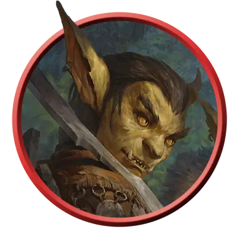

Гоблин-воитель
Goblin Warrior
Маленькая Фея (Гоблиноид), Хаотичная Нейтральная

Класс Защиты 15 Инициатива +2 (12)
Хиты 10 (3к6)
Скорость 30 футов
| мод | спас | ||
|---|---|---|---|
| СИЛ | 8 | −1 | −1 |
| ЛОВ | 15 | +2 | +2 |
| ТЕЛ | 10 | +0 | +0 |
| мод | спас | ||
|---|---|---|---|
| ИНТ | 10 | +0 | +0 |
| МДР | 8 | −1 | −1 |
| ХАР | 8 | −1 | −1 |
Чувства Тёмное зрение 60 футов, пассивное Восприятие 9
Языки Общий, Гоблинский
Опасность 1/4 (50 опыта; БВ +2)
Действия
Скимитар. Бросок рукопашной атаки: +4, досягаемость 5 фт. Попадание: 5 (1к6 + 2) Рубящего урона, плюс 2 (1к4) Рубящего урона, если атака совершалась с Преимуществом.
Короткий лук. Бросок дальнобойной атаки: +4, дистанция 80/320 фт. Попадание: 5 (1к6 + 2) Колющего урона, плюс 2 (1к4) Колющего урона, если атака совершалась с Преимуществом.
Бонусные действия
Ловкий побег. Гоблин совершает действие Отход или Затаивание.
Бонус мастерства +2
Среда обитания Леса, Луга, Подземье, Холмы, Ахерон, Страна фей
Сокровища Личные, Инструментальные
Гоблины
Дикие обманщики и смутьяны
Гоблины воплощают в себе безрассудную и дикую натуру Страны Фей. Им нравится устраивать беспорядки — чем громче, оживлённее и запутаннее, тем лучше. Во время своих набегов, которые могут быть частью более крупных разрушительных планов, они не забывают веселиться, устраивать поджоги и издеваться над домашним скотом.
Гоблины с радостью пойдут за предводителями с самыми сумасшедшими планами. Этими лидерами могут стать гениальные гоблины-боссы, напыщенные маги или просто самые громкоголосые личности. Хобгоблины или влиятельные гуманоиды также могут возглавить группы своенравных гоблинов и направить их энергию на разбой, диверсии или участие в войне.
Считается, что гоблинам, хобгоблинам и медвежатникам покровительствует Маглубиет — божество, командующее бесчисленными легионами гоблиноидов на Вечном поле битвы Ахерона. В давно минувшие эпохи он заметил их разрушительные наклонности и переместил часть этих народов в своё царство на Внешних планах. С тех пор орды этих более воинственных гоблинов умножили своё число, а некоторые из них нашли свой путь в миры Материального плана. Злобные захватчики, они стремятся учинить как можно больше разрушений, подготавливая мир к приходу своего бога-завоевателя.
Гоблины-воители отлично умеют сеять хаос и создавать проблемы. Те же из них, кто посвятил себя служению Маглубиету, более дисциплинированы и могут отступить, чтобы завлечь врагов в засаду.